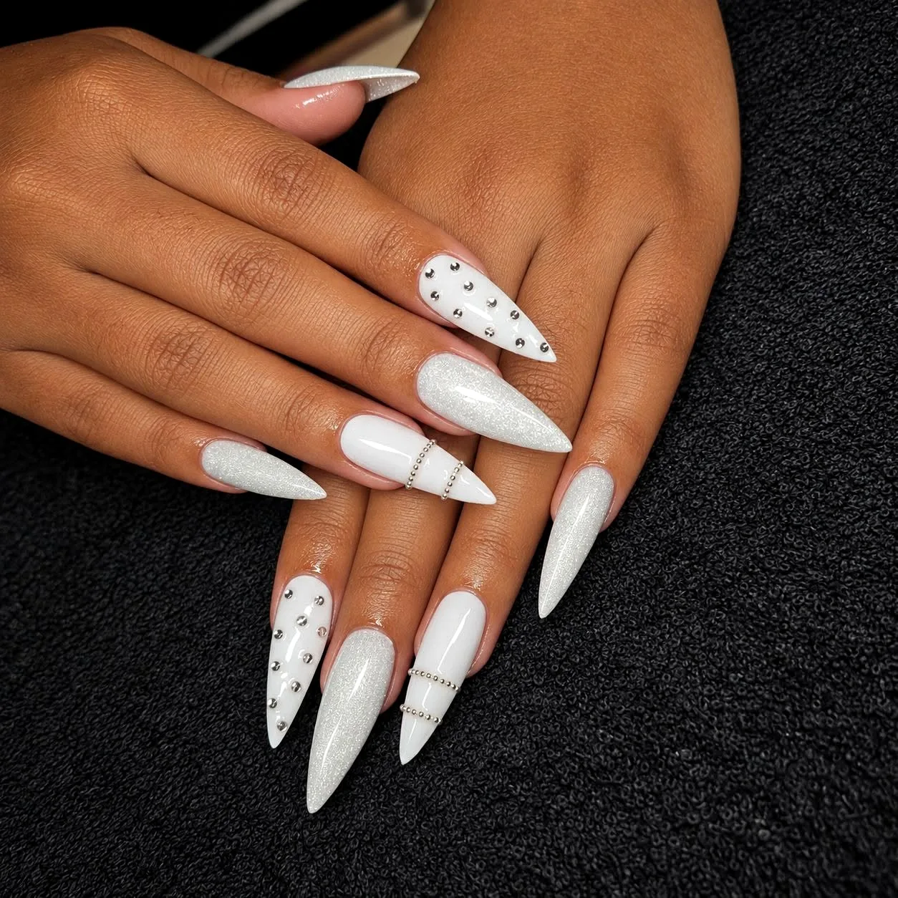
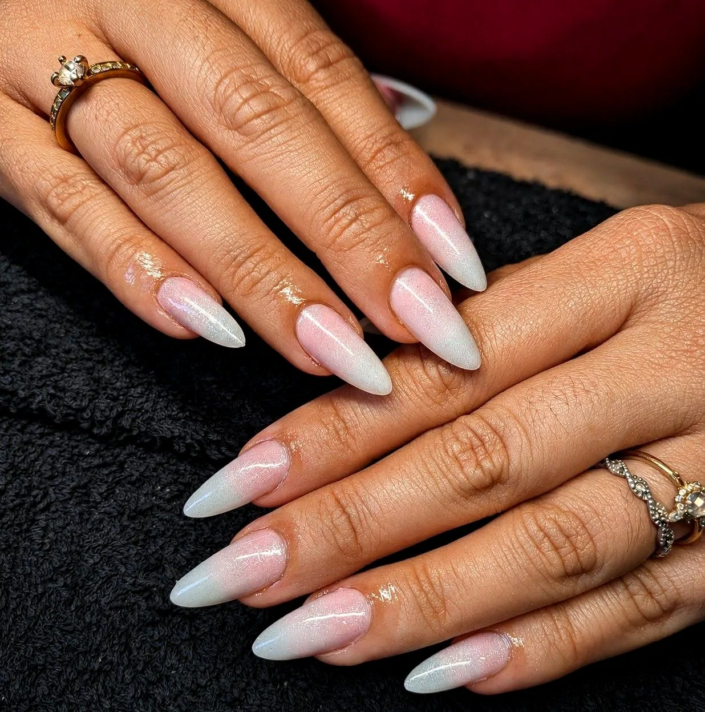
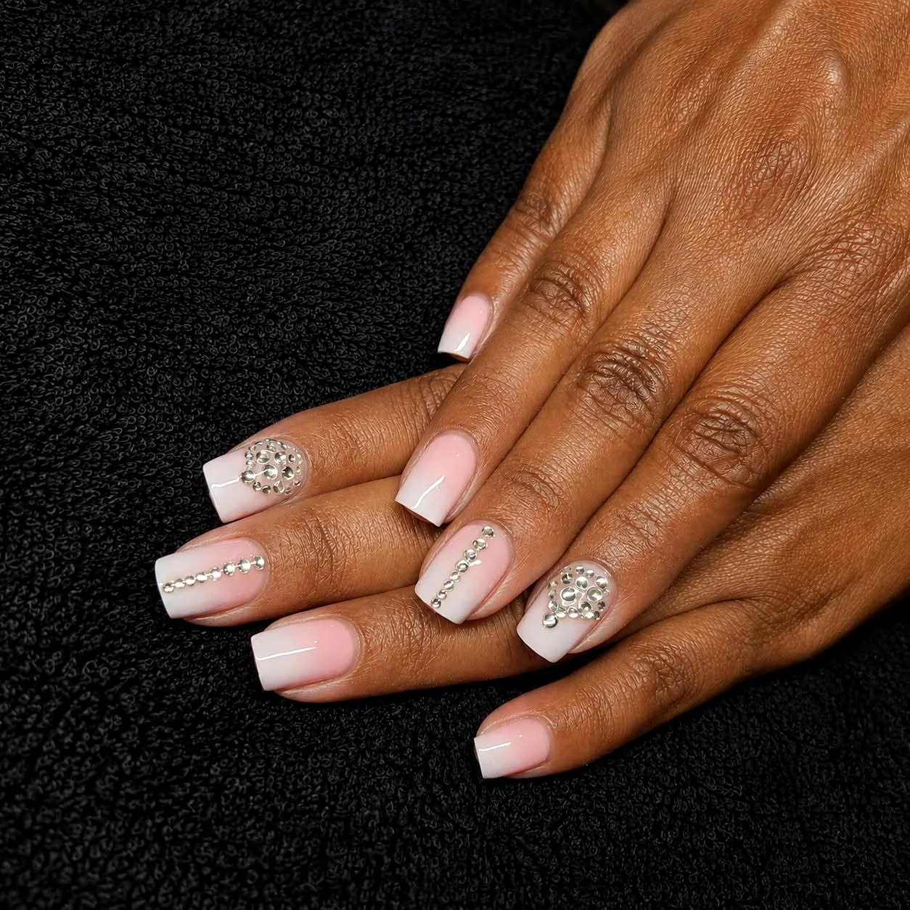
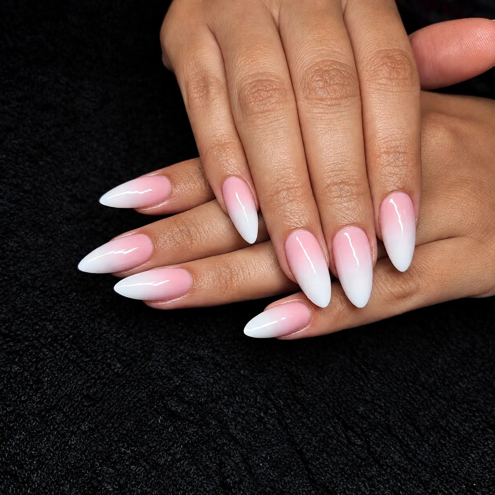
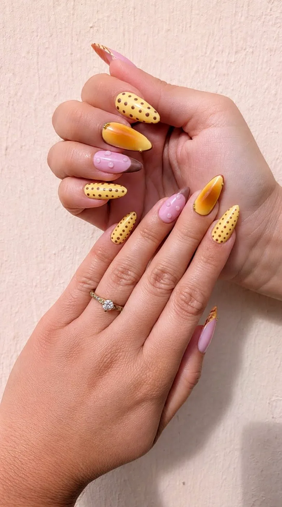
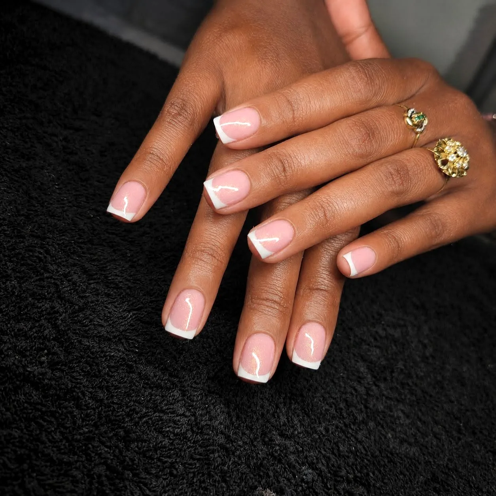
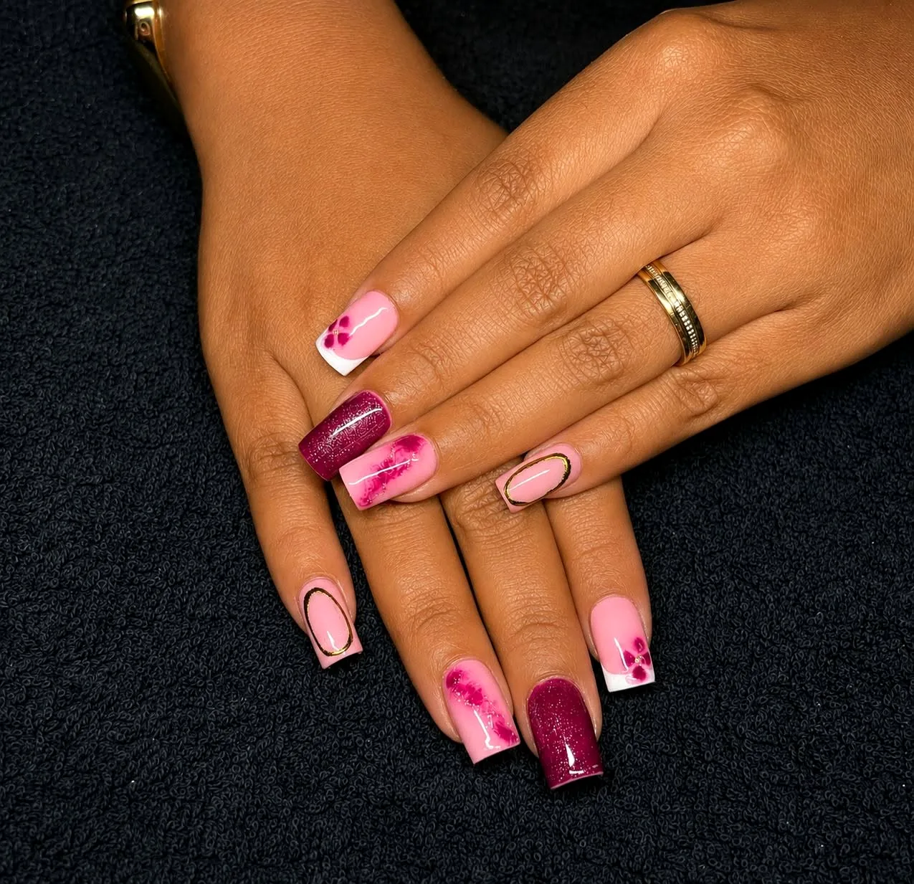
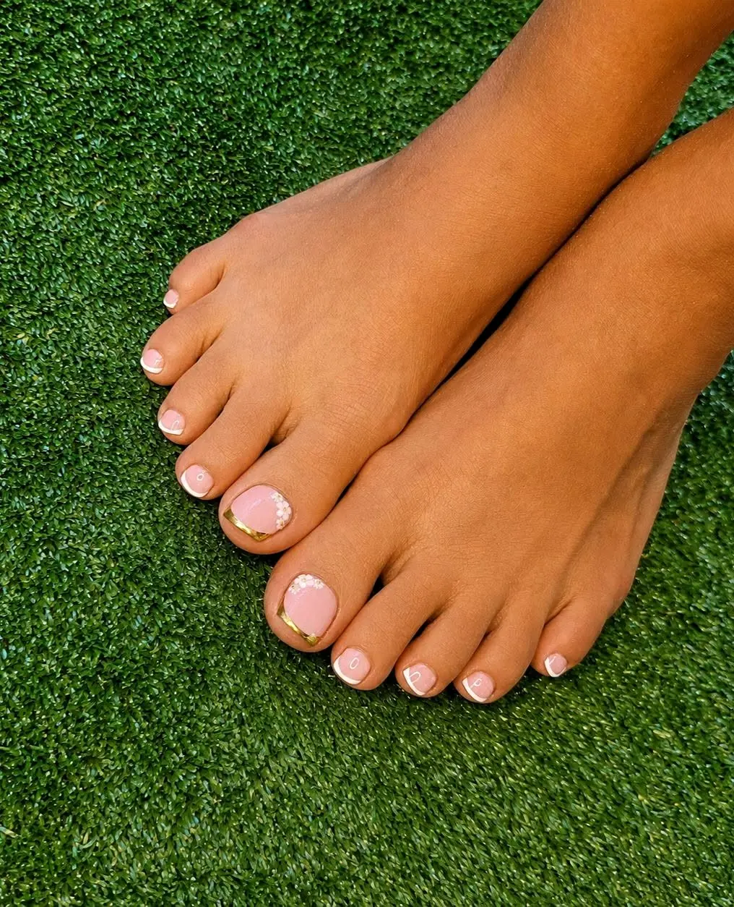
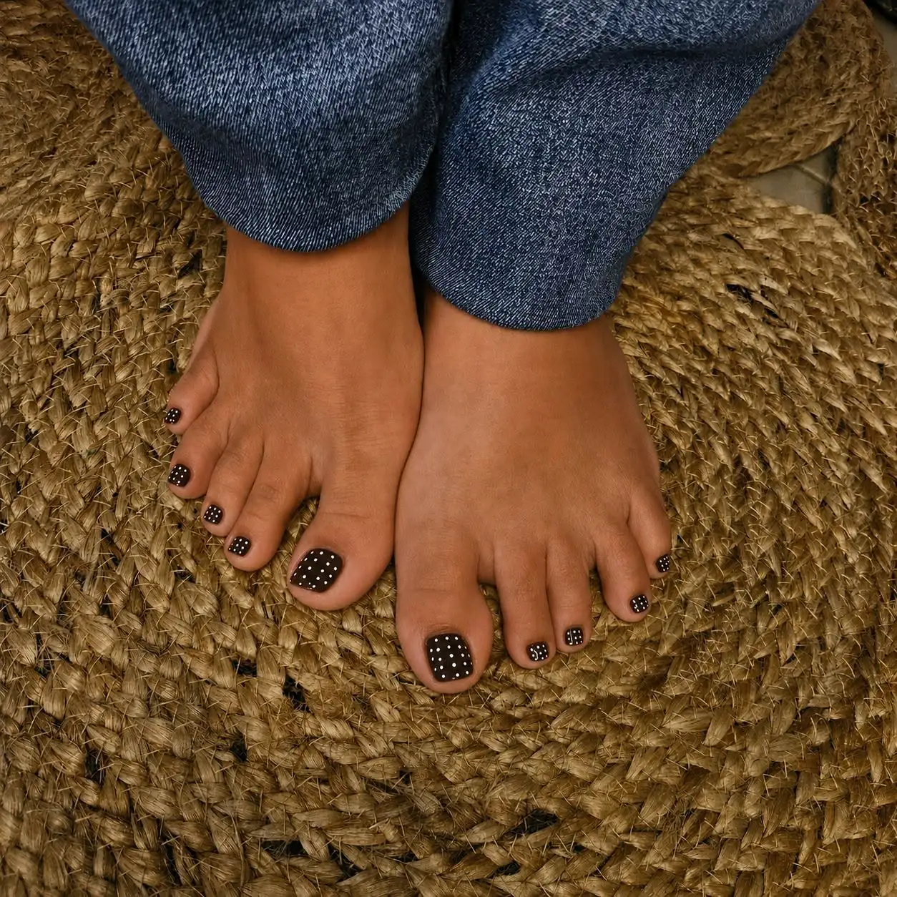

Onglerie · Sainte-Suzanne · La Réunion
CoNailsdes ongles pensés comme un bijou
Capsules américaines, semi-permanent pieds et mains, babyboomer et nail art sur mesure : le blanc, la brillance et une touche de strass, pour sublimer vos mains et vos pieds.
Sainte-Suzanne · 0692 94 72 05
L'univers CoNails
Les petits détails font les plus belles finitions
Chez CoNails, chaque pose se travaille comme une pièce de joaillerie : une forme amande ou stiletto bien dessinée, une brillance parfaite, et ce qu'il faut de strass, de doré ou de bijoux pour signer le tout.
Du blanc lumineux au noir chic, du French intemporel aux designs colorés, corail, léopard ou effet marbré : vos envies deviennent une manucure élégante qui attire les regards.
« Le chic du noir, la perfection d'une pose sur mesure. »CoNails, publication du 9 juillet 2026


Les prestations
Pour sublimer vos mains et vos pieds
Capsules américaines
Une longueur et une forme parfaites, prêtes à recevoir babyboomer, French ou nail art. Pose réalisée avec les produits Beautilux Réunion.
Semi-permanent pieds & mains
Une couleur brillante et durable, du classique tout doux aux finitions dorées, avec gainage sur ongle naturel pour des ongles renforcés.
Épilations & massages
Pour compléter votre moment beauté : des épilations soignées et des massages pour se détendre.
Les créations
Brillance, strass & douceur
Quelques poses récentes publiées sur la page CoNails, avec leurs mots à elles.




← faites glisser →


Côté pieds
Doré et French, jusqu'au bout des orteils
Le semi-permanent pieds a lui aussi droit à sa signature : bandes dorées sur fond rose, French nacré sur le gros orteil, ou petits pois blancs sur un noir brillant. De quoi être fière de ses sandales toute l'année, sous le soleil de La Réunion.
Offrir pour Noël
Offrez un moment chez CoNails
Pour une maman, une sœur, une amie : une jolie pose à offrir, à glisser sous le sapin.
Une pose de capsules américaines
Babyboomer, French ou nail art : elle choisit son style.
Un semi-permanent pieds & mains
Des mains et des pieds brillants pour toutes les soirées de fin d'année.
Un moment détente
Une épilation ou un massage pour se faire du bien.
Envie d'offrir ? Écrivez-nous, on prépare ensemble le cadeau idéal.
Rendez-vous
On prend soin de vos ongles ?
Les rendez-vous se prennent par message : WhatsApp, Messenger ou Instagram.
Où · Sainte-Suzanne, 97441, La Réunion
Téléphone & WhatsApp · 0692 94 72 05
E-mail · gaboriaucoline2@gmail.com